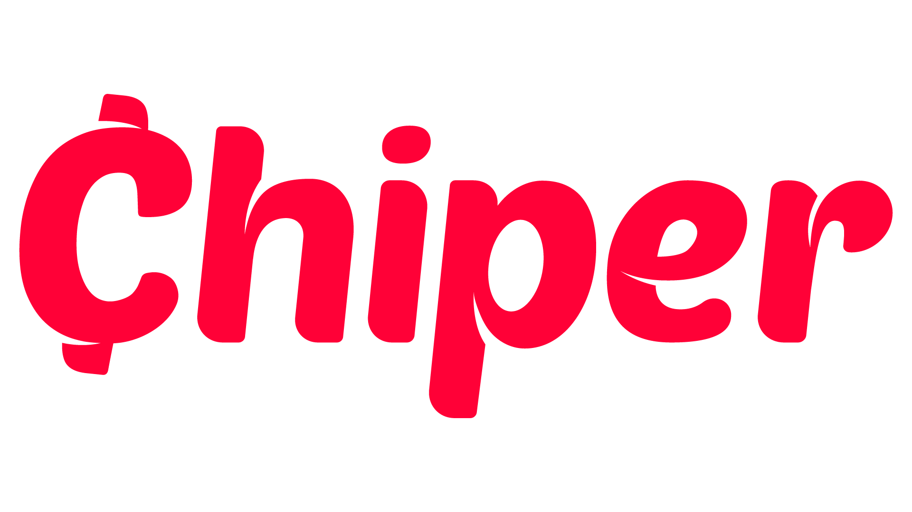
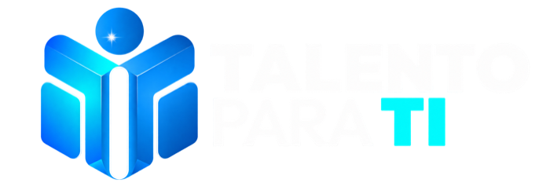

Documentos que responden con fuente, sin que la IA invente. Un caso real con la normativa de minas, plantas y fábricas del Perú.
Daniel Portugal· Field Engineering Leader · TALENTO PARA TI
Sobre el ponente
Daniel Portugal Revilla
Field Engineering Leader en TALENTO PARA TI
Fundador de Data Wizard y Data Engineering LATAM
Creador de Daniel Datashow en YouTube y TikTok
Ingeniero de datos con más de 9 años transformando datos en decisiones: arquitecturas lakehouse, streaming en tiempo real y plataformas como Databricks, Snowflake y BigQuery. Bachiller en Ingeniería de Sistemas por la UCSM, Arequipa.
in/danielportugalrdatawizard.tech@DanielDatashow
MI TRAYECTORIA

TALENTO PARA TI
Sigamos conectados
Encuéntrame en LinkedIn
Daniel Portugal

Partner de Databricks
TALENTO PARA TI
Datos e inteligencia artificial sobre Databricks, de la arquitectura a la operación
Proyectos de implementación
Llevamos sus casos de uso a producción: migración a Databricks, agentes de IA, machine learning y MLOps, entregados como código.
Entrenamiento
Rutas por perfil y preparación para las certificaciones oficiales de Databricks, con clases en vivo, proyecto real y mentoría.
Staffing especializado
Ingenieros y arquitectos certificados que se suman a su equipo, por proyecto o por horas, con el respaldo de TPT.
Plataforma
· Arquitectura en Databricks
· Integración de fuentes
· Lakehouse por capas
Gobierno y operación
· Gobierno y seguridad con Unity Catalog
· Monitoreo y operación
· Rendimiento y costo
IA y personas
· IA aplicada y RAG
· Machine learning y MLflow
· Formación por perfil
Cómo empezamos
1Diagnóstico de plataforma
2Prueba de concepto en ambiente espejo
3Formación por perfil
4Migración o implementación
Databricks en números · 2026
De un laboratorio en Berkeley a una de las empresas privadas más valiosas del mundo
US$190B
Valoración en su ronda de 2026
+US$7B
Ingresos anualizados (run-rate)
20.000+
Organizaciones clientes en el mundo
+60 %
del Fortune 500 usa Databricks
Valoración por año (US$ miles de millones)
US$ 6,2 B2019
US$ 38 B2021
US$ 43 B2023
US$ 62 B2024
US$ 134 B2025
US$ 190 B2026
Top 5 empresas privadas más valiosas
1SpaceX
US$1,25T
2Anthropic
US$965B
3OpenAI
US$852B
4ByteDance
US$480B
5Databricks
US$190B
Última valoración conocida (2026). SpaceX incluye xAI tras la fusión.
1.000+ clientes
gastan más de US$1M al año, y más de 100 superan los US$10M.
Alianzas con grandes marcas
Microsoft (Azure Databricks)Google CloudAWSSAPAnthropicOpenAIAccenture
Empresa privada: cifras reportadas por la compañía y la prensa (ago-2026).
El problema
La normativa ya está en tu empresa. Encontrar la respuesta a tiempo, no.
Jefa de seguridad
Unidad minera
¿Sigue vigente este reglamento?
¿Cuál es el límite de plomo en efluentes?
¿Qué nos exige el IPERC?
Normativa Minería Industria25 archivos
Leyes, decretos y reglamentos en PDF. Algunos escaneados, otros de 186 páginas, y uno ya derogado.
Buscar a mano toma horas. Citar la norma equivocada cuesta una multa, una paralización o algo peor.
¿Y si le pregunto a un chat de IA?
Responde seguro. El problema es de dónde lo sacó.
Chat genérico
sin fuente
«¿Sigue vigente el DS 055-2010-EM?»
«Sí, el DS 055-2010-EM regula la seguridad y salud ocupacional en minería…»
✕ Fue derogado en 2016 y no lo sabe
✕ No dice de qué documento sale
✕ No conoce tus archivos internos
Agente con tu normativa
con fuente
«¿Sigue vigente el DS 055-2010-EM?»
«No. El reglamento vigente es el DS 024-2016-EM, que derogó al DS 055-2010-EM. [1]»
✓ Distingue lo vigente de lo derogado
✓ Cita el documento de donde sale
✓ Si no está en tus archivos, lo dice
¿Qué es RAG?
Antes de responder, busca en tus documentos
RAG (Retrieval-Augmented Generation) no le enseña nada nuevo al modelo: en cada pregunta le pone delante las páginas correctas y le exige responder solo con ellas.
La pregunta
¿Cuál es el límite de plomo en efluentes mineros?
R
Recuperar
busca en tus documentos
0,93DS 010-2010-MINAM · Anexo 01 · Plomo Total…
0,88DS 010-2010-MINAM · límites máximos…
0,71DS 040-2014-EM · efluentes…
0,22Ley 28090 · cierre de minas…
De 751 fragmentos, se quedan los más parecidos a la pregunta.
REGLA: responde solo con el contexto y cita [n]. Si no está, dilo.
G
Generar
el modelo redacta
El LMP de plomo total es 0,2 mg/L en cualquier momento y 0,16 mg/L como promedio anual [1].
[1] DS 010-2010-MINAM · Anexo 01
Respuesta con fuente, que cualquiera puede verificar.
Sin RAG: el modelo responde de memoria, con datos viejos o inventados.
Con RAG: responde con tus documentos de hoy y te dice de dónde sale.
RAG tradicional · paso a paso
Cómo se arma un RAG, pieza por pieza
Fase 1
Preparar
Una vez, y cada vez que cambian los documentos
Fase 2
Preguntar
En cada pregunta, en segundos
1 · Documentos
PDF, Word, escaneos: la fuente tal como está
2 · Extraer texto
Parsing y OCR: de archivo a texto limpio, con sus tablas
3 · Chunking
Cortar en fragmentos de ~1.000 caracteres, con un poco de solapamiento
4 · Embeddings
Cada fragmento se vuelve un vector: ~1.000 números que capturan su significado
5 · Base vectorial
Guarda los vectores con su metadata para buscarlos rápido
Pregunta
«¿Límite de plomo en efluentes?»
Embedding
La pregunta también se vuelve vector, con el mismo modelo
Búsqueda
Los k vectores más cercanos: los fragmentos más parecidos
Prompt
Pregunta + fragmentos + reglas, en una sola instrucción
Modelo (LLM)
Redacta la respuesta y cita de qué fragmento sale
consulta la base vectorial
Hecho a mano
Un parser, un divisor de texto, un modelo de embeddings, una base vectorial, un LLM y el código que los une: cinco herramientas que integrar, asegurar y operar.
Ahora, en Databricks
Las mismas piezas, en una sola plataforma
haz clic en cada pieza para ver el detalle
Por debajo de todo: Unity Catalog y MLflow
Quién puede ver qué documento, de dónde viene cada respuesta y cuánto cuesta.
ver detalle
El camino de hoy y el que viene
Hoy lo construimos pieza por pieza. Pronto, la plataforma lo hará sola.
Lo que vamos a ver en vivo
RAG construido
CLI en Beta
Agente propio con el Agent Bricks CLI, sobre nuestro índice de AI Search.
· La vigencia es un filtro en el código, no un ruego al modelo
· Controlas cómo se lee, se corta y se busca
· Se despliega como Databricks App, con trazas en MLflow
Lo que viene
RAG administrado
Public Previewaún no en todos los workspaces
Adjuntas a un Genie Agent un volumen con tus PDF y Databricks hace solo el chunking, los embeddings, el índice y las citas.
· Responde citando el archivo y la página
· Cruza documentos con tablas (por ejemplo, la vigencia)
· Listo en minutos, sin código, con menos control sobre cómo busca
Llegó en noviembre de 2026; se habilita por etapas según nube y región.
La idea
Lo administrado resuelve el caso simple. Cuando hay reglas de negocio (vigencia, permisos, auditoría), se construye.
Knowledge Assistant, el atajo anterior, pasó a legacy: ya no se pueden crear nuevos.
La regla de negocio que no se negocia
La vigencia no se le pide al modelo: se filtra antes de que lo vea
DS 024-2016-EM
Reglamento SSO en minería
Vigente
DS 055-2010-EM
El reglamento anterior
Derogado en 2016
filtro en el código
si vigencia ≠ "Vigente": descartar
Se aplica a lo recuperado, antes de llegar al modelo.
✕
Al modelo solo llega
DS 024-2016-EM, vigente
Si alguien pide la historia, se habilita a propósito y la respuesta marca cuál es cuál.
La metadata viaja desde las columnas de SharePoint hasta el índice. Sin metadata, no hay regla que aplicar.
El caso de hoy
Normativa peruana para minería e industria, solo de fuentes oficiales
normas en PDF, desde gob.pe, el Congreso y los ministerios
fragmentos indexados en AI Search, cada uno con su metadata
2
PDF escaneados, sin texto: los leyó el OCR de ai_parse_document
1
norma derogada, puesta a propósito para probar la vigencia
Qué cubre
Seguridad y salud en el trabajoSeguridad mineraCierre de minas y pasivosEstándares de agua, aire, suelo y ruidoLímites de efluentesResiduos sólidosIndustria manufactureraExplosivos e insumos químicos
Material de demostración con normas públicas. No reemplaza la asesoría legal ni al área de seguridad o ambiente.
Demo en vivo
Cuatro preguntas para ponerlo a prueba
1
¿Qué debe contener el IPERC?
Una respuesta con cita del reglamento
2
¿Cuál es el límite de plomo en efluentes minero-metalúrgicos?
Un valor exacto, con su unidad, que sale de un PDF escaneado
3
¿Sigue vigente el DS 055-2010-EM?
La trampa de la vigencia
4
¿Cuál es la tasa del impuesto a la renta minero?
Fuera de sus documentos: tiene que decir que no sabe
Vamos a Databricks →
Lo que corre detrás · Lakeflow Jobs
Un solo job lleva el documento de SharePoint al índice
job · pl-ragdmc-pipeline-completo-dev · 4 de sus 5 tareasclic en cada tarea para ver el detalle
ingesta_sharepoint
Pipeline · Lakeflow Connect
✓
procesar_normativa
Pipeline · Lakeflow
✓
generar_fragmentos…
SQL · warehouse serverless
✓
sincronizar_indice…
Python · serverless
✓
1 · Traer
Copia los PDF y sus columnas de SharePoint (tipo, vigencia, fecha) a Bronce. Solo baja lo nuevo o lo que cambió.
Acción
Conector administrado
→ documentos_raw
2 · Validar y leer
Reglas de calidad sobre la metadata: lo que falla va a cuarentena. Parte los PDF grandes y lee el texto, con OCR si es escaneado.
AI function
ai_parse_document
→ texto_extraido
3 · Cortar
Divide cada norma en fragmentos con su metadata pegada. MERGE con un id estable: si nada cambió, no toca filas.
AI function
ai_prep_search
→ fragmentos_normativa
4 · Indexar
Crea el índice híbrido la primera vez y después lo sincroniza: solo calcula embeddings de los fragmentos nuevos.
Acción
Sync AI Search · Qwen3 Embedding
→ fragmentos_normativa_index
La quinta tarea, exportar_a_volumen, deja los PDF en un volumen para el camino de Genie Agents. Se corre a mano; la programación diaria está en pausa.
El viaje del dato · Unity Catalog
De SharePoint al índice, tabla por tabla
Origen
Bronce
Plata
Oro
AI Search
SharePoint
Normativa Mineria Industria
25
PDF + columnas
bronze_dev.ragdmc
documentos_raw
25
El PDF tal cual, en binario, con su metadata
silver_dev.ragdmc
documentos_con_metadata
25 / 25
Pasaron las reglas de calidad
silver_dev.ragdmc
texto_extraido
25
Texto leído por ai_parse_document
gold_dev.ragdmc
fragmentos_normativa
751
Fragmentos con vigencia y tipo de norma, de ai_prep_search
índice híbrido
…_normativa_index
751 / 751
Vectores + palabras clave. Lo consulta el agente
cuarentena · descartados
0 · 0
Sin metadata o formato no soportado
error de lectura
0
Lo que la IA no pudo leer
La idea
Cada documento se puede seguir de punta a punta. Ninguno se pierde en silencio: si falla, queda en una tabla de control.
¿Cuánto cuesta?
Lo que se usa por pregunta cuesta centavos. Lo que queda prendido, no.
ServicioCómo cobra · precio de listaEn esta demo
Lakeflow Connect y pipelines
Ingesta desde SharePoint y procesamiento
Por tiempo de cómputo serverless (DBU-hora), más un cargo por mantener el conector
Minutos por corrida
ai_parse_document
Leer los PDF, con OCR
Por páginas, según complejidad: US$0,70 a US$6,30 por cada 1.000
734 páginas ≈ US$1
Embeddings
Convertir fragmentos en vectores
US$0,02 por millón de tokens (Qwen3 Embedding 0.6B)
Menos de 1 centavo
AI Search (endpoint Standard)
El índice que busca
US$0,28 por hora por unidad (hasta 2 millones de vectores), mientras exista
US$6,7 al día · ~US$200 al mes
Modelo de lenguaje
Redactar la respuesta
US$0,15 entrada y US$1,20 salida por millón de tokens (Qwen3 80B)
~0,2 centavos por pregunta
Databricks Apps
Hospedar el agente (camino 1)
0,5 DBU por hora en tamaño Medium, mientras corre
Prender solo para usar
SQL Warehouse serverless
Consultas del Genie Agent y del job
4 DBU/h × US$0,70 = US$2,80 por hora (2X-Small); se apaga solo
Centavos por sesión
Genie Agents
Preguntas de los usuarios
Gratis para usuarios hasta el 31-ene-2027; la lectura de archivos se cobra como ai_parse_document
US$0 en la promo
Precios de lista pago por uso, noviembre 2026. AI Search, ai_parse_document y modelos: lista oficial de Databricks (US East, US$0,07 por DBU); SQL serverless: Azure East US 2. Pueden variar por región y contrato: confirmar en la calculadora de Azure.
El siguiente paso
¿Conversamos?
Llevamos tus documentos a un agente que responde con fuente, sobre Databricks. Una prueba de concepto con tus propios archivos, en semanas.


 TALENTO PARA TI
TALENTO PARA TI
 Partner de
Partner de